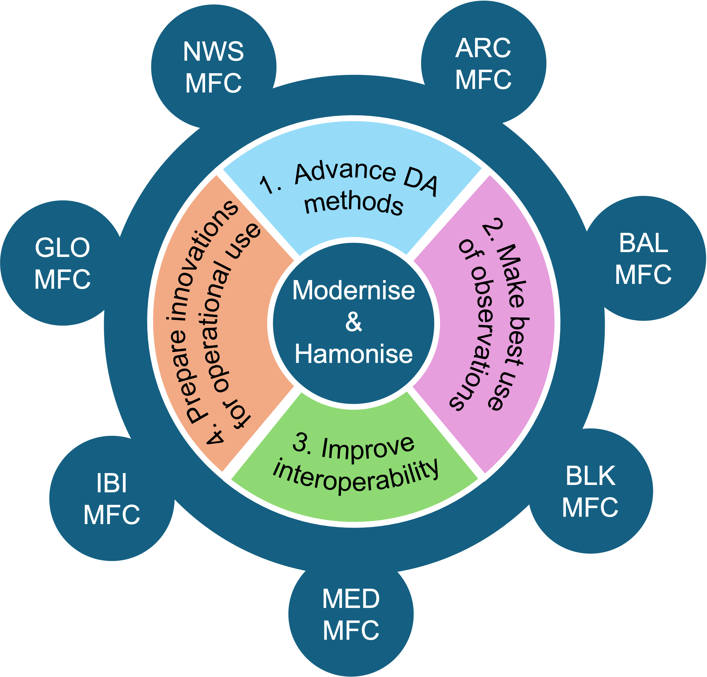

What the project will do
Four objectives

-
Advance DA methods
Enhance each MFC's DA software with novel methods, including multiscale, non-Gaussian and AI-based approaches.
-
Make best use of observations
Add the capability to assimilate new types of satellite observations of the ocean and sea ice.
-
Improve interoperability
Set up Joint Development Teams across the MFCs and develop interoperable DA tools that every centre can share.
-
Prepare innovations for operational use
Demonstrate the new methods in real MFC operational settings and work with Copernicus Marine (CMEMS) stakeholders so users benefit from the advances.
Where it applies
The seven Monitoring and Forecasting Centres
Each MFC runs the operational ocean analysis and forecast for one region of the Copernicus Marine Service. COMEDI works across all of them.
ARCArctic OceanBALBaltic SeaBLKBlack SeaGLOGlobal OceanIBIIberia–Biscay–IrelandMEDMediterranean SeaNWSNorth-West European ShelfHow
Approach
Scalable non-Gaussian DA
The ensemble Kalman filter scales to large ocean models but assumes Gaussian errors. COMEDI investigates multiscale, non-Gaussian and AI-based frameworks that keep that scalability while handling nonlinear dynamics.
Shared software
The work builds on NEDAS, NERSC's lightweight Python ensemble DA system, as a common platform for testing and exchanging methods between centres.
Operational focus
Every innovation is tested against the needs of operational ocean and sea-ice forecasting, with a path into the MFC production systems.
Who
Consortium
Milestones
News and events
-
Project starts
COMEDI begins its four-year programme. Kick-off meeting details to follow.
-
Introduced at the 21st International EnKF Workshop
Presented COMEDI in the talk “New features in NEDAS v1.2.0 and applications in geophysical data assimilation” in Rosendal, Norway. Read more
-
Research directions at the STOCHASTICA workshop
Outlined the project's research questions on scalable non-Gaussian and AI-based DA for the COST Action CA24104 network. Read more